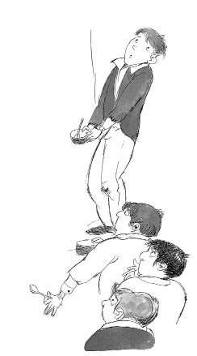

Oliver on aylıkken yaşlı Bayan Mann tarafından büyütülmek üzere düşkünlerevine bağlı çalışan başka bir eve gönderildi. Bayan Mann, kasaba idaresi tarafından ödenen küçük bir haftalık karşılığında, yirmi otuz kimsesiz çocuğa bakıyordu. Bu paranın çoğunu kendisine ayırıyor, çok küçük bir kısmını da çocukları besleyip giydirmek için kullanıyordu. Sonuç olarak Oliver, diğer bütün arkadaşları gibi, yetersiz beslenme ve bakımsızlıktan ufak tefek, solgun yüzlü, zayıf bir çocuk olmuştu.
Oliver dokuz yaşına bastığı zaman, Bay Bumble gelip onu düşkünlerevine geri götürdü. Böylece kendi yaşıtlarıyla birlikte bir meslek öğrenecekti.
Oliver, Bayan Mann’ın evinde çok sefil bir hayat yaşıyordu, ama düşkünlerevinde çok daha mutsuz olmuştu. Birlikte büyüdüğü arkadaşlarını özlüyordu ve karnı her zamankinden daha açtı. Burada çocuklara yiyecek olarak verilen tek şey bulamaçtı.
Bir akşam Oliver, açlıktan çıldıracağını düşündü. Kendisine verilen bir kâse bulamacı bitirmişti, yine de hiç dinmeyen bir açlık hissediyordu. Elinde kâsesi ve kaşığıyla, çaresizce düşkünlerevinin müdürüne yaklaştı.
“Lütfen, efendim,” dedi. “Biraz daha istiyorum.”
Müdür şaşkına dönmüştü. Daha önce hiç kimse daha fazlasını istemeye cesaret edememişti. “Ne?” diye kükredi.
Oliver sessizce, “Lütfen, efendim,” diye tekrarladı. “Biraz daha istiyorum.”
Öfkeden deliye dönen müdür Oliver’ın kafasına vurdu, sonra da onu soğuk ve karanlık bir hücreye kapattı. Oliver orada üç hafta kaldı.
Bir cenaze işleri görevlisi olan Bay Sowerberry onu yanına çırak olarak alınca, Oliver bu sefil hayattan kurtulmuş oldu.
Oliver, Bay Sowerberry’nin evinde, karnını sofradan artakalanlarla doyuruyordu ve tabutların arasında uyumak zorundaydı. Yine de şikâyet etmiyordu. Ama bir gün Bay Sowerberry’nin huysuz yardımcısıyla kavga etti. Bay Sowerberry o kadar kızmıştı ki Oliver’ı düşkünlerevine geri göndermekle tehdit etti.
Oliver korkmuştu. Düşkünlerevine geri dönme düşüncesine tahammül edemiyordu. Bu yüzden, kaçmaya karar verdi.